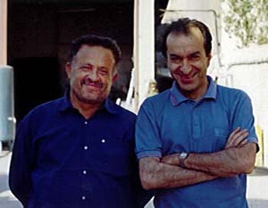

Haji Zarrin
He has a workshop for powder coating in Khorram Dasht, near Tehran. He was very generous to powder coat part of my Bultaco, free of charge.

Haji Zarrin (L) and Ali Parsa at Zarrin workshop, Aug. 2000.